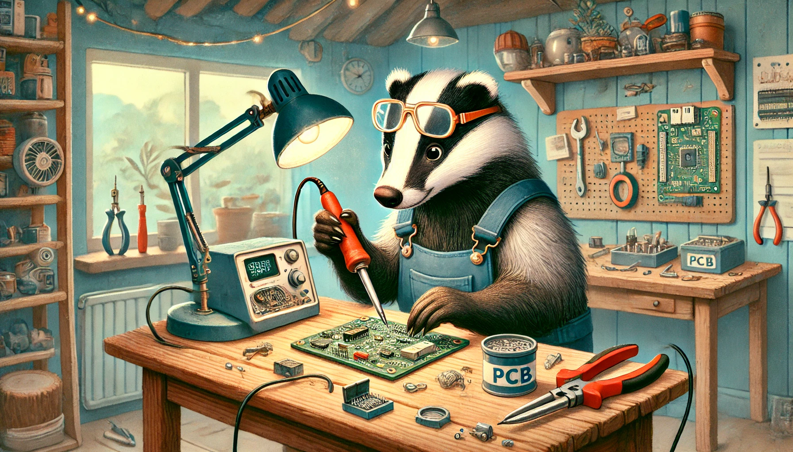
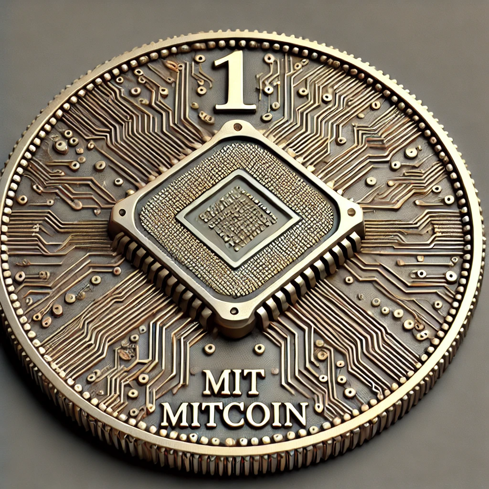
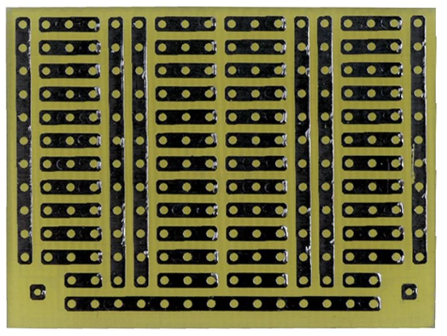
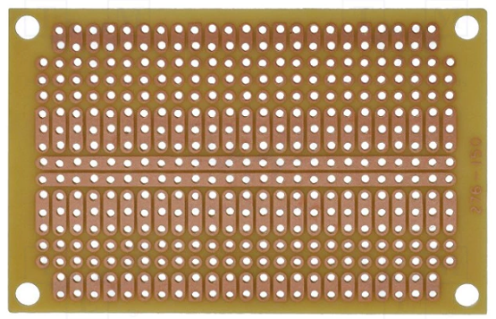
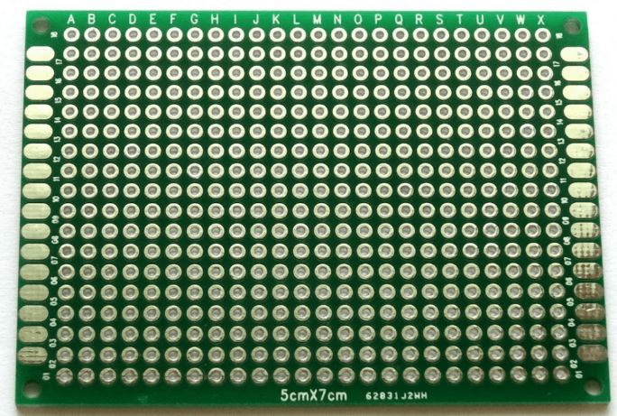
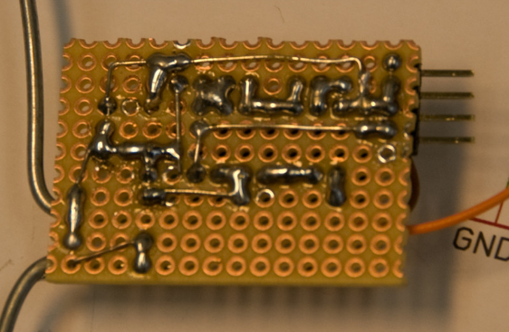
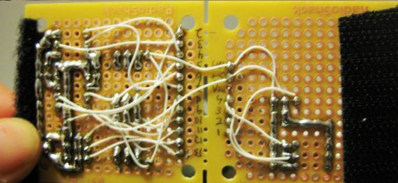
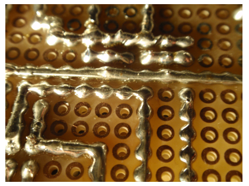

Co se od vás očekává?¶
Každý žák vypracuje dvě projektové úlohy dle vlastní volby. Zadání bude nejprve schváleno vyučujícím, potom se můžete dát do práce. Níže ( tady a tam ) uvádím několik nápadů na zadání, kterými se můžete nechat inspirovat pokud žádný nápad nemáte.
Vzorové zadání¶
Povinné komponenty projektu¶
Volte zadání tak, aby ve vašich projektech (ve všech dohromady, ne v každém) byly obsaženy alespoň jednou následující komponenty:
-
Alespoň jeden projekt bude na vlastní PCB (stačí univerzální) s mikroprocesorem bez vývojového kitu. Můžete použít přímo mikroprocesory s SMD montáží nebo už hotové desky s THT montáží. (Viz Deroboard a desky a čipy STM8S103F3P6 a STM8S105K4T6, které se dají běžně koupit na našem i zahraničním internetu.)
-
AD převodník: například zařízení, které je ovládáno potenciometrem nebo analogový teploměr nebo IR snímač, co se přizpůsobuje pozadí atd.
-
Tlačítko a Rotační encoder: (viz návod.)

-
Časovač – mimo knihovnu
milis.c.- PWM
- měření časového intervalu
- pravidelné zpouštění
- vlastní knihovna podobná nám známé
milis.c
-
Rutina přerušení (
stm8s_it.c)- externí
- interní
- od časovače
- od UARTu
- atd.
Volitelné komponenty projektu¶
Každý si dle svých preferencí zvolí komponenty tak, aby dohromady ve všech projektech celkově získal alespoň 7 MITcoinů 💰. Pokud vaše oblíbená periferie v seznamu chybí, rád ji tam přidám i s patřičnou cenou.

- SPI (2 MITcoiny🪙)
- I2C (3 MITcoiny🪙)
- Alfanumerický LCD display (1 MITcoin🪙)
- Maticová klávesnice (2 MITcoiny🪙)
- Generování zvuku (2 MITcoiny🪙)
- UART (1 MITcoin🪙)
- Optická brána (1 MITcoiny🪙)
- IR detekce překážky (1 MITcoiny🪙)
- IR detekce překážky s odečtem pozadí (2 MITcoiny🪙)
- Ovládání rychlosti DC motoru (2 MITcoiny🪙)
- Ovládání servo-motoru (2 MITcoiny🪙)
- Ovládání krokového motoru (4 MITcoiny🪙)
- Měření vzdálenosti pomocí ultrazvuku (2 MITcoiny🪙)
- PWM regulace (2 MITcoiny🪙)
- IR dálkové ovládání (2 MITcoiny🪙)
- Měření teploty/vlhkosti si onewire komunikací (2 MITcoiny🪙)
- atd. atp. (X MITcoinů🪙)
Jak bude vypracovaný projekt vypadat?¶
Vypracovaný projekt bude obsahovat:
- Původní zadání.
- Funkční zapojení – můžete použít vlastní PCB, univerzální PCB nebo nepájivé pole.
- Funkční program – dle zadání
- Projektovou dokumentaci:
- schema zapojení (samozřejmě v KiCADu)
- vývojový diagram a stručný popis činnosti programu
- okomentovaný zdrojový kód (hezký a barevný) v podobě textu; žádné screenshoty obrazovky vývojového prostředí
- Vše bude uloženo ve veřejném Git repositáři – tedy vše kromě HW.
Formu projektové dokumentace nechám na vás. Může to být PDF dokument nebo README na GitLabu.
Náměty a pomůcky pro hardware¶
Nucleo-8S208RB¶
Ve výuce používáme vývojovou desku Nucleo-8S208RB s mikroprocesorem STM8S208RB.

Tato deska je (ale nemusí být) napájena z USB. Obsahuje programátor s HW debugerem a USB2UART bridge. Můžete si zvolit pinout, který je Arduino-kompatibilní nebo plnohodnotný pinout, který sedí na univerzální PCB. Je tu tedy vše, co pro začátek potřebujete. Vyčerpávající popis najdete v článku STM8S208 Nucleo nebo v uživatelském manuálu.
STM8S Discovery¶
Dalším zajímavým vývojovým kitem je STM8S DISCOVERY s procesorem STM8S105C6. Kit obsahuje i maličkou bastl desku a programátor lze použít k programování libovolného procesoru STM8S. Více opět v uživatelském manuálu.

Standalone programátor¶
Při řešení samostatných projektů budeme postupně přecházíme k vlastnímu hardware, který by už neměl být na nepájivém poli, ale spíše na desce plošných spojů. V těchto případech budeme potřebovat μprocesor, který bude přímo v aplikaci a samostatný – standalone programátor+debuger, pomocí kterého bude možné program ladit a nahrát. Možností je vícero – moc hezky to má popsáno Michal. Doporučuji přečíst!
DeroBoard¶

S poměrně malou námahou si můžete ubastlit vývojovou desku STM8S Dero Board. Tuto desku můžete použít i pro svoje samostatné projekty. Je osazena procesorem STM8S103F3. K dispozici máte všechny zdrojové soubory pro KiCad a hezkou rozpisku součástek.
Nebo…¶
Něco podobného, se stejným procesorem lze zakoupit i od čínských výrobců: STM8S103F3P6 development board.

Pokud poptáváte vybavenější procesor existuje podobná vývojová deska: STM8S105K4T6 Developmen Board. Ta vám může posloužit podobně jako oficiální STM8 Discovery.

USB to UART Bridge¶
Pokud plánujete projekt, kde μprocesor komunikuje s PCčkem, bude se vám hodit převodník USB TTL UART. Dá se běžně zakoupit i na českých e-shopech. Ještě je dobré upozornit, že ne každý operační systém automaticky komunikuje s každým čipem, proto je dobré věnovat pozornost tomu, jakým čipem, je osazen převodník, který hodláte zakoupit a zda se váš OS s tímto čipem kamarádí.
USB2UART bridge je součástí vývojové desky Nukleo-Kit
Pokud používáte Nucleo-kit je tento převodní už jeho součástí.

Univerzální PCB¶
Na projektové prototypování můžete s výhodou využít univerzální (prototypovou) desku.
     
Existuje celá řada variant a vzorů (třeba tu nebo tam) universálních bastl-desek; zde bych rád upozornil na některé – pro nás zajímavé:
- řady po třech: 1 2
- jen body: 1 2
- s rozvodem napájení: 1 2
- s roztečí Arduino shield: 1 2 3 4. Tuto desku můžete použít s Nucleo-kitem Nucleo-8S208RB.
Dutinkové a kolíkové lišty
K univerzálním deskám se vám budou hodit dutinkové lišty a pinové řady, (také zde) s jejichž pomocí můžete svou univerzální desku posadit na Nucleo-Kit nebo STM8S Discovery.
Další součástky a hotové moduly¶
Je ještě spousta dalších udělátek, které stojí za to zmínit. Omezím se jen na nákupní seznamy. Je asi jasné, že mi nejde o konkrétní obchod, ale spíše o zboží, které se jistě dá zakoupit i někde jinde.
Několik nápadů pro menší projekt¶
1. Stopky¶
- Start/stop
- mezičas (stisk zobrazí aktuální “čas kola” a stopky běží dál)
- měření na setiny sekundy Tichý (alfanum-display)
- měření na milisekundy
- Potřeby: displej, tlačítka
2. Stopky s optickou bránou¶
Optická brána se sestaví buď z laserové LED a fototranzistoru (velká vzdálenost, přesná pozice) nebo s pomocí IR LED a IR detektoru (menší přesnost pozice, větší odolnost světelnému pozadí)
- Start se provádí tlačítkem, stop se měří přerušením opt. brány
- Start i stop se realizuje dvojicí opt. bran (přerušení první brány spustí čas, přerušení druhé brány zastaví čas) - čas pak lze měřit velmi přesně (klidně i rychlost střely atp.)
Potřeby: displej, tlačítko, laserovou LED nebo IR LED, fototranzistor(y) nebo IR detektory
3. “Minutky”¶
- s nastavením minut (1 až 180)
- akustický signál po skončení 2
- blikání po skončení
potřeby: displej, enkodér nebo tlačítka, reproduktor/buzzer
4. Teploměr¶
- dva senzory (vnitřní/vnější)
- paměť maxima minima
- zobrazování trendu (teplota roste/klesá/stagnuje)
potřeby: displej, teplotní senzory, příp. tlačítka
4. Termostat 1¶
- digitálně nastavitelná “referenční teplota”
- digitálně nastavitelná hystereze
- digitálně nastavitelný “čas zpoždění” (jak dlouho musí být překročena teplota aby termostat sepnul)
- digitálně volitelná polarita výstupu
- volitelný spínaný výstup (Open Drain, Relé, H-můstek)
- akustická signalizace překročení/podkročení (i vícestupňová)
Potřeby: displej, tlačítka, teplotní senzory, příp. Relé, příp.integrovaný H-můstek, příp.tranzistory (MOSFET)
5. Termoregulátor¶
Otáčky ventilátoru řízené teplotou
- digitální nastavení teploty pro 0% otáčky a pro 100% otáčky
Potřeby: ventilátor, teplotní čidla, displej, tlačítka/enkodér
6. Teplotní logger¶
Zaznamenává teplotu v daném intervalu (např 1 minuta) a ukládá do (externí) eeprom/flash paměti. Na výzvu po UARTu odešle teploty do PC k vykreslení grafu.
- volitelná frekvence měření
- volitelný počet záznamů (např. 1 den atp.)
Potřeby: Baterie, teplotní čidla, externí paměť, USB/UART převodník a stabilizátor napětí pokud je to realizováno mimo vývojový kit
7. časový spínač¶
Stiskem tlačítka se spustí a drží aktivovaný výstup (světlo, motor, atp.) po zvolenou dobu
- dobu volit potenciometrem
- dobu volit přepínačem
- dobu volit digitálně
Potřeby: Tlačítka, spínaný prvek (LED, motor atp.), příp potenciometr/přepínač, příp. displej
8. Zvonek s melodií¶
- po stisku zahraje předem danou melodii
- v případě nízkého napětí (bateriové napájení) hraje při stisku jinou melodii (dává na vědomí potřebu vyměnit baterie)
Potřeby: piezorepro
9. Klávesový hudební nástroj¶
- budí piezoreproduktor obdélníkovým signálem přímo z MCU
- výstupy MCU jsou posíleny tranzistory (hlasitější výstup)
- generuje čisté harmonické tóny (sinus)
Potřeby: piezoreproduktor / reproduktor, příp. integrovaný obvod zesilovače, příp. DA převodník
10. Meteostanice¶
- zobrazuje teplotu vnitřní, vnější a případné extrémy (minimum, maximum)
- zobrazuje tlak a tlakovou tendenci
- zobrazuje vlhkost vzduchu
Potřeby: displej, senzory teploty, příp. tlaku, příp.vlhkosti
11. Model křižovatky¶
- řídí plnohodnotně křižovatku typu X, včetně oranžové barvy a přechodů pro chodce
- umí reagovat na tlačítka na přechodech pro chodce
Potřeby: 8x Zelená, 8x červená, 4x žlutá LED, tlačítka
12. Počítadlo průchodů¶
počítá kolik lidí prošlo dovnitř a ven:
- pomocí dvojice laserových optozávor
- pomocí dvojice optických IR bran
Potřeby: displej, tlačítko, Laserové LED a fototranzistory nebo IR LED a IR detektory
13. Počítadlo “motohodin”¶
počítá (po sekundách) úhrnný provoz zařízení a zobrazuje ho (v hodinách, minutách a přip. sekundách provozu). Pamatuje si stav i po vypnutí a po zapnutí naváže. Resetuje počet pomocí tlačítka.
Potřeby: Displej, tlačítko
14. Teploměr logger s grafickým displejem a historií.¶
Ukazuje na grafickém displeji aktuální teplotu a zároveň vývoj teplot za posledních 24 hodin.
Potřeby: Grafický displej, teplotní čidlo
15. Stroboskop¶
bliká s volitelnou frekvencí a volitelnou šířkou pulzu (obě zobrazuje na displeji)
- Výstup na výkonovou LED
- nastavení frekvence i šířky pulzu potenciometrem
- digitální nastavení frekvence i šířky
Potřeby: Displej, LED, příp. potenciometry/tlačítka/enkodér
16. soumrakový spínač¶
- digitálně nastavitelná intenzita osvětlení pro sepnutí a rozepenutí
- automatické přepínání zisku při měření intenzity (velký rozsah)
Potřeby: Fotorezistor, operační zesilovač, příp.displej
17. Coulomb counter¶
Měří úhrnou spotřebu elektrické energie ze stejnosměrného napájení a zobrazuje na displeji vyčerpanou kapacitu (Ah)
- Zobrazuje i vyčerpaný výkon (Wh)
- Ukazuje i napětí zdroje energie (výhodné pokud je zdrojem baterie)
Potřeby: Displej, operační zesilovač, bočník
18. Solární systém (“Solární baterie”)¶
- hlídat napětí baterie a zapínat a vypínat nabíjení ze solárního panelu
- hlídat podpětí baterie a odpojovat zátěž
- případně indikovat stav baterie
- Lze sestavit pro olověné nebo lithiové akumulátory
Potřeby: akumulátor, solární panel, drobná elektronika, příp. displej
19. řízení otáček 3-drátového nebo 4-drátového ventilátoru¶
- pomocí enkodéru / tlačítek
- zobrazovat otáčky na displej
- možnost řídit otáčky teplotou
Potřeby: ventilátor, displej, tlačítka/enkodér, případně teplotní senzor
20. Tester AA a AAA baterií¶
Po vložení baterie do přípravku změří napětí a vnitřní odpor a vyhodnotí stav/kvalitu baterie
- možnost přidat automatickou změnu “polarity” (baterii lze vložit i opačně)
potřeby: Displej, drobná elektronika
21. Digitální interkom¶
Mikrokontrolér digitalizuje zvuk, odešle ho pomocí UARTu skrze UTP kabel k dalšímu mikrokontroléru, který signál převede zpět na akustický
Výzva :) Potřeby: Dva mikrokontroléry, DA převodník, další drobná elektronika
22. “Sun tracking” solární nabíječka¶
Solární panel umístěný na servomotorku, mikrokontrolér snímá polohu slunce na obloze a natáčí panel tak aby zachytával maximální množství energie a nabíjí tím baterii
- hlídání stavu baterie (ukončuje nabíjení když je akumulátor plně nabitý, odpojuje zátěž když je kompletně vybitý)
- indikace stavu baterie
Potřeby: Akumulátor, solární panel, servomotorek, příp.krokový motorek, mechanika
23. Tester/měřič kapacity olověných akumulátorů¶
Zařízení nabije akumulátor, poté ho vybije zvoleným proudem a změří a zobrazí celkovou kapacitu (a pak akumulátor zpět nabije).
Výzva :)
Potřeby: napájecí adaptér, displej, mikrokontrolér, další analogová elektronika
24. Osvětlení ovládané dálkovým ovladačem (skrze IR)¶
- ON/OFF funkce
- Regulace jasu
- U RGB světel i regulace barvy
Potřeby: IR LED, IR přijímač, LED, drobná elektronika
25. “propípávák” - tester kontinuity (jako je na multimetrech)¶
Potřeby: Buzzer/Reproduktor
26. Logická sonda¶
Testuje úroveň napětí (rozpoznává úrovně H a L) s akustickou signalizací
- lze zabudovat do těla fixy (ergonomické ovládání)
- lze signalizovat různé úrovně (5V, 3.3V) různým tónem
- lze zabudovat test polarity
- lze vyrobit napájené akumulátorem
Potřeby: buzzer, drobná elektronika
27. Generátor obdélníkového průběhu¶
- Frekvence až do 160MHz
- Lze vybavit volbou výstupního napětí
Výzva :)
28. Generátor sinus/trojúhelník/obdélník/PWM¶
- Frekvence až 25MHz
- lze vybavit regulací výstupního napětí
Výzva :)
29. FM rádio¶
- automatické vyhledávání stanic
- digitální nastavení hlasitosti
- Příjem RDS (textových informací jako jméno skladby atp.)
Potřeby: Displej, reproduktor, modul rádia, tlačítka/enkodér
30. Hodiny s obvodem RTC¶
- s budíkem
- s rádiem - radiobudík
potřeby: Displej, tlačítka
31. Panelový měřák k napájecímu zdroji¶
Měří a ukazuje na displeji, napětí, proud a výkon. Lze realizovat společně s napájecím zdrojem.
Potřeby: Displej, různá drobná analogová elektronika
32. Měření vzdálenosti¶
Ultrasonic + LCD display
Několik nápadů pro větší projekt¶
1. Regulátor nabíjení akumulátoru pro solární panel¶
- automatické odpojování zátěže při podpětí
-
optimalizace na nízkou spotřebu
-
možnost měřit a zobrazovat nabíjecí proud
- možnost měřit a zobrazovat vybíjecí proud
- možnost automatického spínání podle denní doby (ráno, večer)
- možnost automatického spínání zátěže podle nastaveného času (RTC)
2. FM Rádio¶
- nastavení frekvence
- nastavení hlasitosti
-
paměť stanic
-
automatické vyhledávání
- zobrazování RDS
- chod z baterií nebo akumulátoru
3. Hodiny s budíkem¶
- přesný čas odvozený od RTC (DS3231 ?)
- zálohování času z baterie
- možnost nastavení času
- možnost nastavení budíku
-
napájení adaptérem z 230V
-
automatické nastavení jasu podle okolního osvětlení (“noční režim”)
4. Ohmmetr¶
- rozsah 10R až 10MOhm
- automatická volba rozsahu
-
napájení z baterií nebo akumulátoru
-
přiřazování do řad E12 a E24
- zobrazení odchylky od nejbližší hodnoty z řady
5. Tester baterií¶
- měření napětí
- měření “vnitřního odporu”
- akustická nebo optická signalizace dobrá/špatná
6. “Laboratorní” teploměr s USB výstupem do PC¶
- měřit teplotu ze dvou čidel
- volitelná frekvencě měření
- tlačítko “start / stop” spouštějící a ukončující měření
- odesílat teploty v čitelném formátu do PC (přes USB VCP)
7) “Domácí” teploměr¶
- měřit teplotu dvou čidel (vnější vnitřní)
- zobrazovat na displeji (textový LCD, numerický LCD, segmenty, grafický LCD, grafický TFT, OLED)
-
napájení z adaptéru (230V)
-
zobrazovat maxima, minima
- zobrazovat trend (tempo růstu, poklesu)
- vykreslovat “křivku” vývoje teploty za posledních 24/48h
8. dálkový ovladač (IR)¶
- obyč. dálkovým ovladačem (třeba k TV) zapínat a vypínat (ovládat) světlo nebo jakoukoli jinou zátěž
9. Kanadský žertík s IR vysílačem¶
- automaticky po zhasnutí nebo setmění pošle příkaz pro zapnutí TV
- automaticky v pravidelných intervalech přepne TV na zvolený (nebo náhodný) program
- automaticky v pravidelných intervalech snižuje hlasitost
-
miniaturizovaná zařízení napájené z malé baterie (CR2032) - aby ho bylo možné skrýt
-
optimalizovat spotřebu, aby vydrželo co nejdéle
10. Optická brána¶
- dvojice senzorů schopná snímat směr průchodu
-
senzory buďto IR nebo lasery (obě s clonkou)
-
schopnost rozeznat “anomálie” (více osob procházejícíh zároveň atp.)
11. Termostat¶
- jeden nebo více senzorů (průměrování nebo maximum/minimum)
- nastavitelná teplota zapnutí a vypnutí (případně setpoint a hystereze)
-
zobrazování teploty
-
možnost krádodkobé činnosti z baterie/akumulátoru
- schopnost snímat teplotu z více druhů čidel
- schopnost automaticky rozpoznat připojená čidla
- schopnost ruční kalibrace (dvoubodové)
12. meteostanice¶
- snímání dvou teplot (venku, uvnitř)
- kombinované napájení adaptér + baterie/akumulátor
- měření atmosférického tlaku
-
zobrazování na LCD (alfanumerickém nebo i grafickém)
-
měření UV
- měření slunečního svitu (denní úhrn)
- měření vlhkosti (interier)
13. Jakákoli forma dálkově ovládaného “autíčka” či jiného stroje¶
- ovládání ideálně modelářským vysílačem (nutno obstarat)
- mechanika libovolná, merkur, lego, stavebnice
-
napájení akumulátory
-
možnost řešit bezdrátovými moduly namísto “modelářského” ovladače, ale nutno obstarat
14. bezdrátová komunikace s NRF24¶
- (nejlevnější datový bezdrátový modul)
- posílání libovolných zpráv (senzory, textové zprávy atp.)